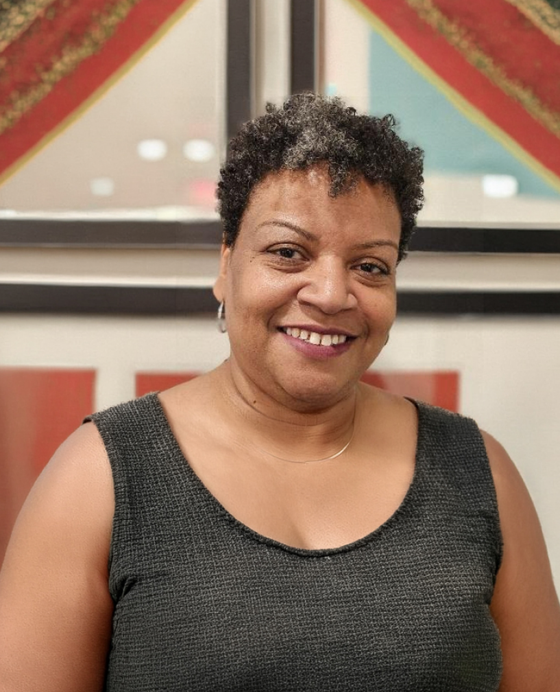

Twenty-five years guiding buyers, sellers, investors, and developers through real estate purchases from contract to close.
Let's discuss your deal
(312) 572-9189
Georgette stays close to every deal from the first call to the closing table: on call, deeply involved, and genuinely invested in getting you across the finish line. She explains what's happening at each step and what to watch for, so you're never left guessing. You're not handed off to a portal or a receptionist; you get her, the whole way through.
For more than 25 years, Georgette Reynolds has guided Chicago buyers, sellers, investors, and developers through the legal side of real estate, and she does it personally. From the first call you have her direct number, not a portal or a receptionist, and a clear answer whenever a question comes up.
She reads every document before you sign it, flags issues the moment she sees them, and when a deal hits a snag she goes a step further, finding a workable path forward instead of simply naming the problem. Her clients never have to wonder what is happening in their transaction, or whether they can reach the person handling it.
That care is backed by real expertise. Georgette holds an advanced degree in real estate law and has taught the subject for years, and she brings a steady, solutions-first outlook to every file, which tends to lead to better outcomes for everyone at the table.
My clients should never have to wonder what is happening in their transaction, or feel uncertain about whether they can reach me.
She picked up the night before closing and walked me through everything in ten minutes. I never felt alone in the process.
Buyer · Bucktown Pending approval
She was in my corner at every step, and caught two issues in my contract I would have missed.
Repeat buyer · Gold Coast Pending approval
Same-day callbacks, every time. I always knew exactly where my deal stood.
Seller · Hyde Park Pending approval
She explained every document in plain language. I actually understood what I was signing.
First-time buyer · Logan Square Pending approval
Calm, responsive, and three steps ahead. Exactly who you want on a tricky closing.
Investor · Pilsen Pending approval
Every transaction is different, but the work comes down to four roles: planning the path, keeping people moving, solving problems as they arise, and managing risk before it threatens the deal.
Getting clear on your goal from the start and charting the path that gets you to a successful close.
Coordinating the agents, lenders, and other parties in your transaction so the deal keeps moving.
Thinking ahead and developing workable alternatives when Plan A stalls, always with a constructive, solutions-first outlook.
Identifying areas of risk and concern early, and putting effective methods in place to resolve them before they become problems.
Every matter is handled personally, for buyers, sellers, investors, and developers alike. You will always know where your transaction stands, and you will always be able to reach Georgette directly.
Full representation for buyers and sellers of single-family homes, condominiums, townhomes, and multi-unit properties throughout Chicago and the suburbs, from contract through closing.
Acquisition, disposition, and refinance of commercial property, guiding owners and businesses through deals where the details carry real financial weight.
Representation for investors, developers, and flippers: multi-unit and portfolio transactions, with the due diligence these deals demand.
Negotiation of purchase contracts and commercial leases, title and document review, and preparation for closing, so you reach the table with no surprises.
A few of the things buyers, sellers, and investors ask most often, with the clear, honest answers you should have before your transaction begins.
Before you sign anything, if possible. The best time to call is when you have an accepted offer but haven't signed the contract yet. That's when I can do the most for you. Illinois gives buyers and sellers a 5-business-day attorney modification period after signing, and I use every day of it. And if you're earlier in the process and just want to understand what to expect, please call. That conversation is always free.
A great deal that happens behind the scenes. I review and prepare the contract and closing documents, confirm the title is clear, make sure the numbers match what was agreed, and walk you through every page before you sign. My four jobs on every deal are to plan toward your goal, facilitate the other parties, advise when something needs a Plan B, and manage risk before it becomes a problem, so you reach the table with no surprises.
It matters a great deal. Illinois is an attorney state for real estate closings, so you're already paying for legal representation. The question is whether that attorney is genuinely working for you or simply moving paperwork. I represent one party in a transaction, never both sides, so the advice you get is always squarely in your interest.
It matters whether the owner is an individual, a trust, or a corporate entity, and whether they have the proper authority to sell. I confirm this up front. I also check early for any liens or encumbrances and how much lead time we'll need to clear them, and whether an association or village requires approvals or documentation before closing. These are the surprises I'd rather catch weeks ahead, not days.
If there are tenants, there are documents a buyer will need. I gather them. I look at whether recent improvements were done with the proper permits and lien waivers, whether there are any open code violations, and whether zoning supports the buyer's intended use. And if a deal involves a short sale, foreclosure, or bankruptcy, that's exactly the kind of problem I'm built to work through.
You call me. That's it. You'll have my direct number from the start, and I return calls the same day, even when I'm in a closing. Real estate transactions move quickly and questions almost never arrive at convenient moments. You shouldn't have to wonder if your attorney got your message. With me, you won't have to.
Tell me about your transaction and I'll tell you exactly how I can help. There's no commitment and no pressure, just a clear, honest conversation with someone who has been through this process many times and is glad to guide you through it.
Call directly
(312) 572-9189Office
1507 E. 53rd Street #609
Chicago, IL 60615
Prefer to write first? I'll follow up by phone, usually within a few hours.